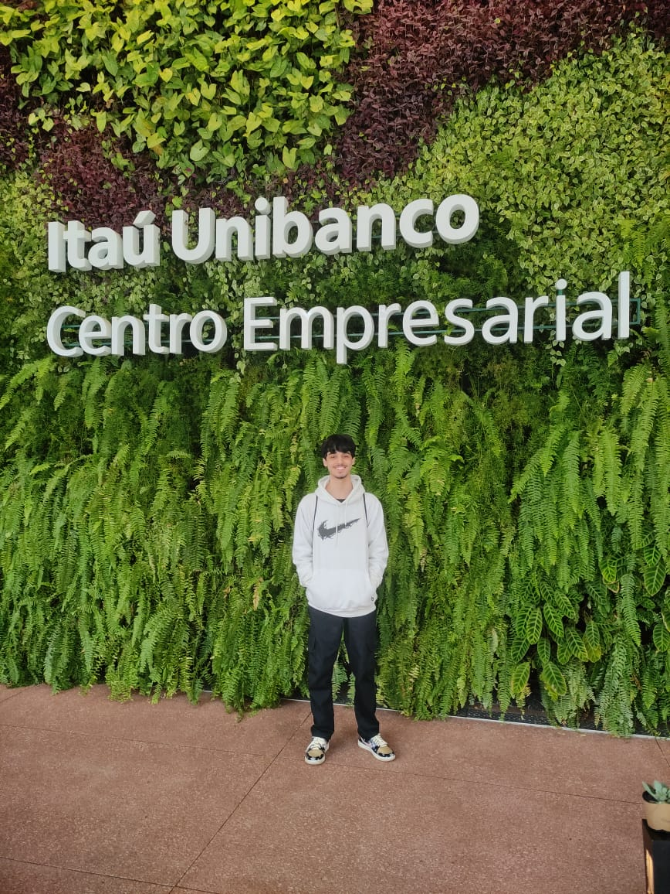
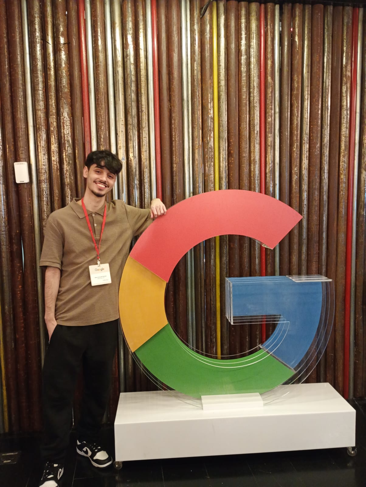
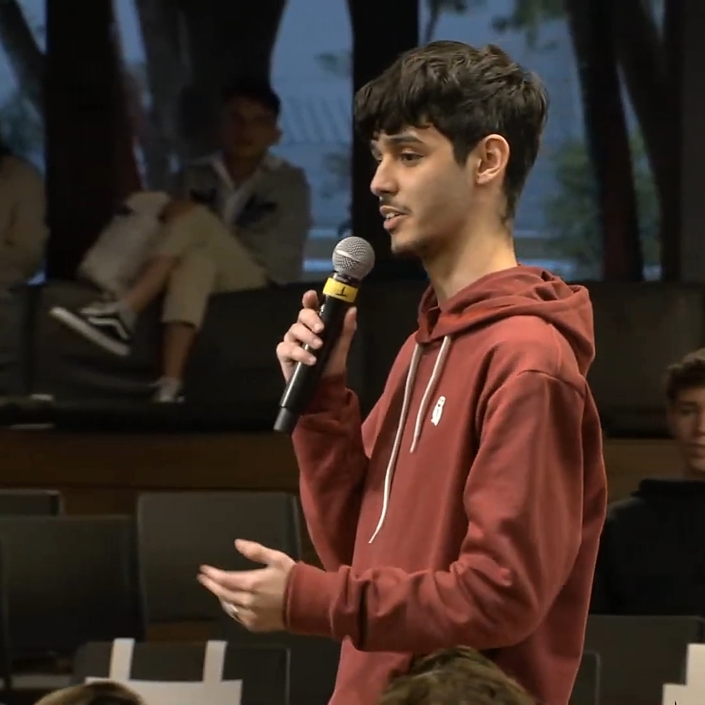
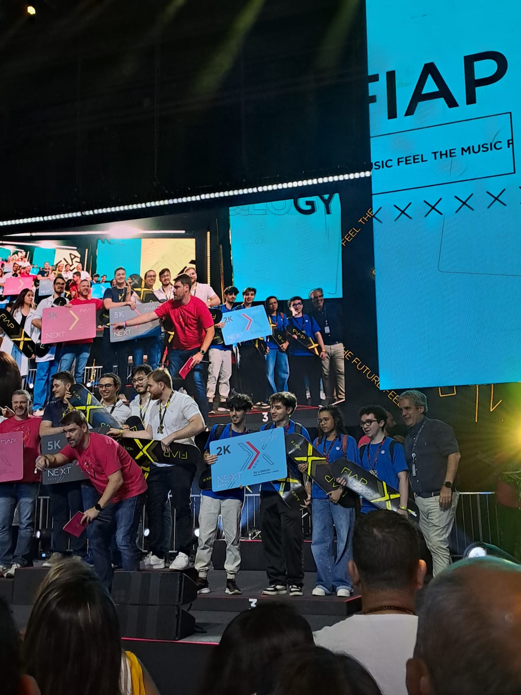

Building meaningful software that bridges gaps and creates real-world impact.
Minha história
De Paraisópolis para o Itaú, construindo tecnologia com propósito.
LINHA DO TEMPO
2021
UNICEF Brasil · Instituto Tellus · BT
Aos 16 anos, liderou o desenvolvimento de plataforma educacional para crianças com TDAH e dislexia em Paraisópolis. A iniciativa foi tema de matéria publicada no site da UNICEF Brasil — "Muito promissor para o meu futuro".
Ler matéria na UNICEF →2023
FIAP · IBM
Plataforma de acessibilidade para PcD. Top 10 entre 70 projetos.
2023 – 2025
Emdia | Grupo Santander
Estagiário promovido a Jr. React, .NET, APIs RESTful, Scrum.
2024
Hospital das Clínicas – USP · FIAP
Simulação cirúrgica em Unity/VR. 3º lugar entre 100+ projetos.
2025
Itaú Unibanco · São Paulo
Full stack + cloud/IaC. Next.js, Terraform, AWS. AWS Cloud Practitioner certificado.
2026 →
Itaú Unibanco · São Paulo
Efetivado como Engenheiro de Software Júnior. Full stack, cloud e IaC em produtos de escala.
OBJETIVOS 2025–2026
Analista de Engenharia TI Jr — avançar do estágio para efetivação.
GCP, AWS, Azure, Terraform e back-end — aprofundar em arquitetura de soluções e sistemas.
TCC da graduação. Criar, validar e escalar uma startup de impacto.
Tech lead e referência para jovens talentos de Paraisópolis.
Bastidores
Alguns registros da jornada — de Paraisópolis ao Google.




Criador de conteúdo
No Instagram eu mostro o lado real da carreira em tecnologia: a rotina de um dev júnior no Itaú, eventos, bastidores da faculdade e dicas de programação para quem está começando, principalmente para quem, como eu, veio da periferia e quer entrar na área.
Trabalhos selecionados
Do impacto social à realidade virtual — cada projeto com propósito.
Impacto social · 2021 · aos 16 anos
⭐ DestaquePlataforma educacional para crianças com TDAH e dislexia, desenvolvida aos 16 anos em Paraisópolis. A iniciativa foi tema de matéria publicada pela UNICEF Brasil — "Muito promissor para o meu futuro" — tornando-se referência de tecnologia com impacto social na comunidade.
Ver matéria na UNICEF →Acessibilidade · 2023
Mapeamento de serviços acessíveis para Pessoas com Deficiência. Top 10 entre 70 projetos — IBM & FIAP.
VR · Unity · 2024
Simulação cirúrgica imersiva em VR, desenvolvida com Hospital das Clínicas – USP. 3º lugar no NEXT FIAP entre 100+ projetos como líder técnico.
Ver vídeo do projeto →Startup · 2025 — em construção
TCC da graduação. Criar, validar e escalar uma startup com impacto real. Fique ligado.
Desenvolvimento
Plano de desenvolvimento individual, pontos fortes, certificações e tecnologias.
| Prazo | Profissional | Acadêmico | Pessoal |
|---|---|---|---|
|
Curto
até 6 meses
|
|
|
|
|
Médio
6m – 2 anos
|
|
|
|
|
Longo
2 – 5 anos
|
|
|
|
Certificações
Stack